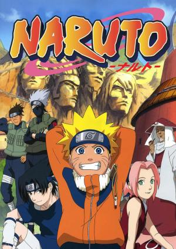

Naruto
| Naruto | Akatsuki | Kunoichis |
| Akatsuki: | Pain/Nagato | Itachi | Hidan | Zetsu | Sasori | Deidara | Kisame | Kakuzu | Konan |
|---|---|---|---|---|---|---|---|---|---|
| AMANECER | Aquel que no conoce el dolor, no puede entender el verdadero significado de la paz. | El tiempo no cura nada, solo nos enseña a vivir con el dolor | El jashinismo es la verdad, y el sacrificio es la clave. | Un experto con una piedra puede vencer a un novato con un shuriken | El arte es algo que perdura para toda la posteridad. El arte es eterno | EL VERDADERO ARTE ES UNA EXPLOSIÓN | Los débiles son carne, los fuertes comen | Si estás preparado, no habrá ningún dolor | Seré el soporte que sostenga nuestros puentes |